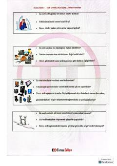

MSMilli Sertifika imtihonining og'zaki nutq qismi uchun savollar va javoblar to'plami.
Ushbu kitob turk tilidagi 'Milli Sertifika' imtihonining og'zaki nutq qismi uchun tayyorlangan savollar to'plamidir. Unda fobiyalar, san'at, texnologiya, raqobat va empatiya kabi turli mavzularda fikr yuritish uchun namunaviy savollar va javoblar keltirilgan.